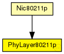

This documentation is released under the Creative Commons license
This documentation is released under the Creative Commons licenseAdaptation of the PhyLayer class for 802.11p.
See also: DemoBaseApplLayer
See also: Nic80211p
See also: Mac1609_4
The following diagram shows usage relationships between types. Unresolved types are missing from the diagram. Click here to see the full picture.
| Name | Type | Description |
|---|---|---|
| BasePhyLayer | simple module |
Basic physical layer module. See the class "BasePhyLayer" documentation. |
| Name | Type | Description |
|---|---|---|
| Nic80211p | compound module |
This NIC implements an 802.11p network interface card. |
| Name | Type | Default value | Description |
|---|---|---|---|
| recordStats | bool | false |
enable/disable tracking of statistics (eg. cOutvectors) |
| usePropagationDelay | bool |
Should transmission delay be simulated? |
|
| noiseFloor | double |
catch-all for all factors negatively impacting SINR (e.g., thermal noise, noise figure, ...) |
|
| useNoiseFloor | bool |
should a noise floor be considered when calculating SINR? |
|
| antenna | xml | xml(" |
|
| antennaOffsetX | double | 0 m |
Offset of antenna position (x direction) with respect to what a BaseMobility module will tell us (inherited from IChannelAccess) |
| antennaOffsetY | double | 0 m |
Offset of antenna position (y direction) with respect to what a BaseMobility module will tell us (inherited from IChannelAccess) |
| antennaOffsetZ | double | 1.895 m |
Offset of antenna position (z direction) with respect to what a BaseMobility module will tell us (inherited from IChannelAccess) |
| antennaOffsetYaw | double | 0 rad |
Offset of antenna orientation (yaw) with respect to what a BaseMobility module will tell us (inherited from IChannelAccess) |
| analogueModels | xml |
Specification of the analogue models to use and their parameters |
|
| decider | xml |
Specification of the decider to use and its parameters |
|
| minPowerLevel | double |
The minimum receive power needed to even attempt decoding a frame |
|
| timeRXToTX | double | 0 | |
| timeRXToSleep | double | 0 |
Elapsed time to switch from receive to sleep state |
| timeTXToRX | double | 0 |
Elapsed time to switch from send to receive state |
| timeTXToSleep | double | 0 |
Elapsed time to switch from send to sleep state |
| timeSleepToRX | double | 0 |
Elapsed time to switch from sleep to receive state |
| timeSleepToTX | double | 0 |
Elapsed time to switch from sleep to send state |
| initialRadioState | int | 0 |
State the radio is initially in (0=RX, 1=TX, 2=Sleep) |
| radioMinAtt | double | 1.0 |
radios gain factor (attenuation) while receiving |
| radioMaxAtt | double | 0.0 |
radios gain factor (attenuation) while not receiving |
| nbRadioChannels | int | 1 |
Number of available radio channels. Defaults to single channel radio. |
| initialRadioChannel | int | 0 |
Initial radio channel. |
| ccaThreshold | double | -65 dBm |
defines the CCA threshold |
| collectCollisionStatistics | bool | false |
enables/disables collection of statistics about collision. notice that enabling this feature increases simulation time |
| allowTxDuringRx | bool | false |
decides whether aborting the simulation or not if the MAC layer requires phy to transmit a frame while currently receiveing another |
| Name | Value | Description |
|---|---|---|
| class | veins::PhyLayer80211p |
| Name | Direction | Size | Description |
|---|---|---|---|
| upperLayerIn | input |
from the MAC layer |
|
| upperLayerOut | output |
to the MAC layer |
|
| upperControlIn | input |
control from the MAC layer |
|
| upperControlOut | output |
control to the MAC layer |
|
| radioIn | input |
for sendDirect from other physical layers |
This documentation is released under the Creative Commons license